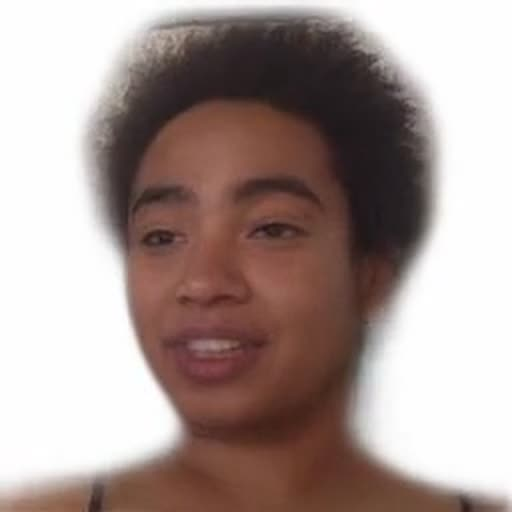

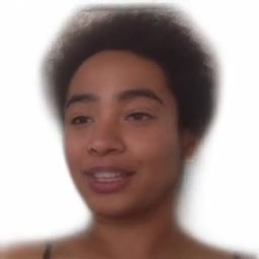
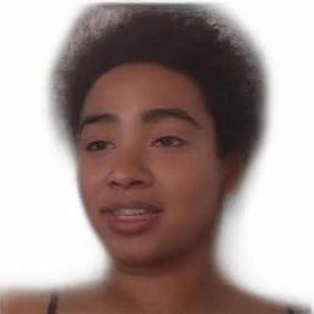
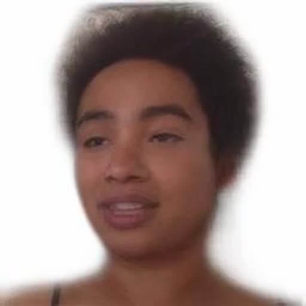
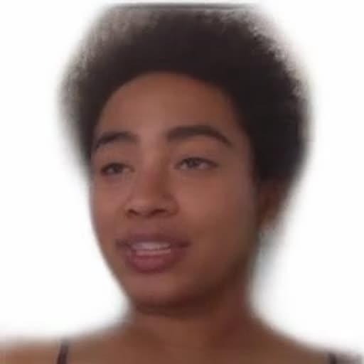
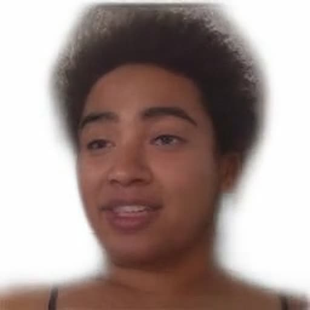
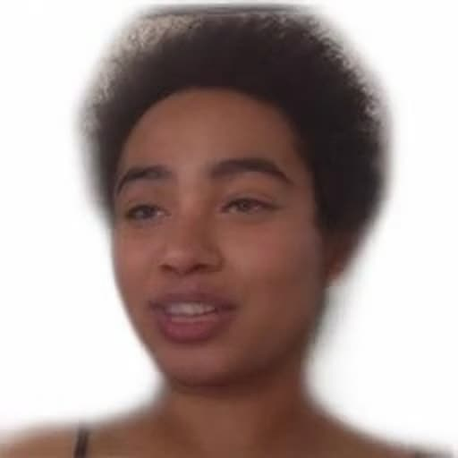
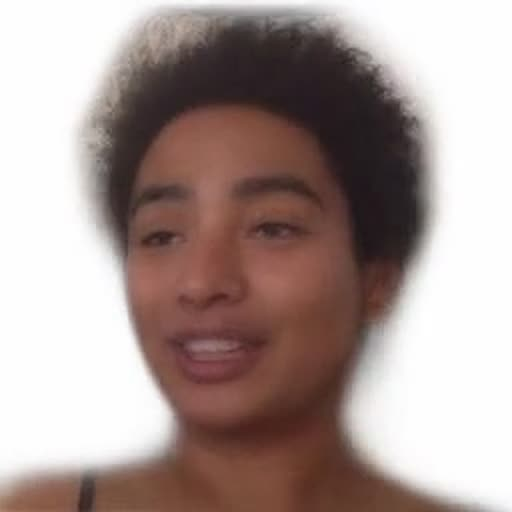
Artificial Nouveau Studio
Selected works, 2014–2026. Installations, moving image and interactive systems on how bodies are measured, optimised and represented by machines.
AI engineer · media researcher · computational artist
Ahnjili ZhuParris, PhD (NL/USA), is an AI engineer, media researcher and computational artist. Her doctoral research in medicine used machine learning to predict diagnoses and prognoses from smartphone and wearable data. As an AI engineer she specialises in computer vision and visual retrieval-augmented generation (RAG). Her media research examines internet discourses around specific topics, tracing how narratives form and circulate online.
Her current computational art comprises research-based moving-image, drone and installation works exploring how bodies are measured, optimised and represented by AI systems. The works in this portfolio move between surveillance apparatus and synthetic media.
Ahnjili holds a PhD in Medicine from Leiden University, an MSc in Cognitive Neuroscience from Radboud University and a BSc from the University of Edinburgh. She is a Mozilla Creative Media Award recipient, a Processing Foundation Fellow and a Public AI Creative Fellow. Her work has been supported by the Mozilla Foundation (US), IMPAKT (NL) and Constant (BE), and exhibited at Ars Electronica (AT), Articulating Data (UK) and the CICA Museum (KR).
Alongside the practice, Ahnjili gives talks and runs hands-on workshops on AI, surveillance, deepfakes and creative technology for festivals, universities and museums, and takes on bespoke commissions.
Performative installation · autonomous drones, computer vision, annotated live feed
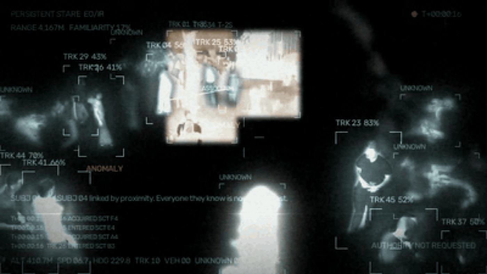
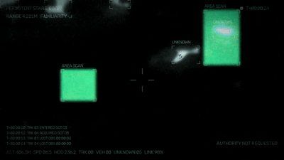
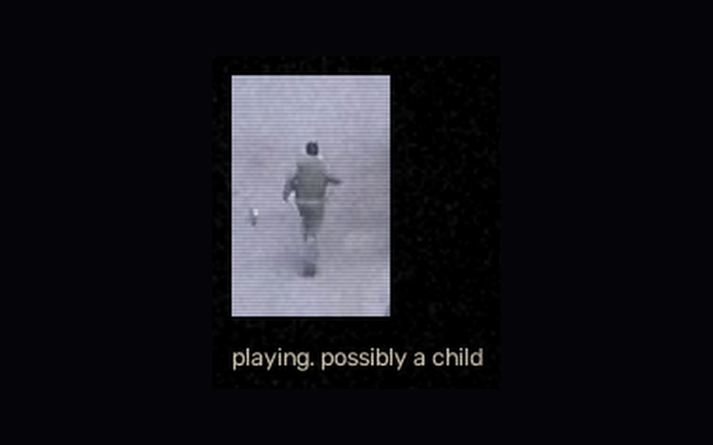
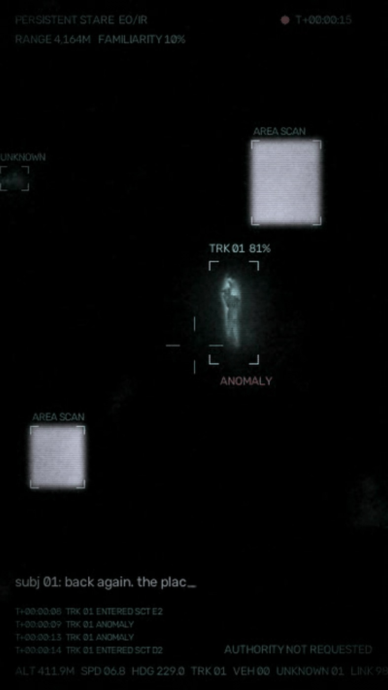
Close Enough is a performative installation about the intimacy of drone surveillance, built around the central contradiction of drone warfare: the operator is close enough to see a target's face, to watch them eat breakfast and play with their children, to learn their routines and small daily habits, but far enough away to kill without physical consequence. Operators have described this in testimony as a form of stalking, weeks spent coming to know someone intimately before ending their life.
Drawing on pattern-of-life analysis, The Drone Papers and the Living Under Drones report, the work turns its attention to the watching itself: the sustained, one-sided accumulation of knowledge about a life, gathered from a distance and without consent, spreading outward from one person to everyone they know. Using autonomous drones, computer vision and the visual language of military intelligence, Close Enough places an audience inside that logic, on both sides of the apparatus at once, having been known long before they noticed anything looking.
Online archive · interactive network graph · curatorial panels
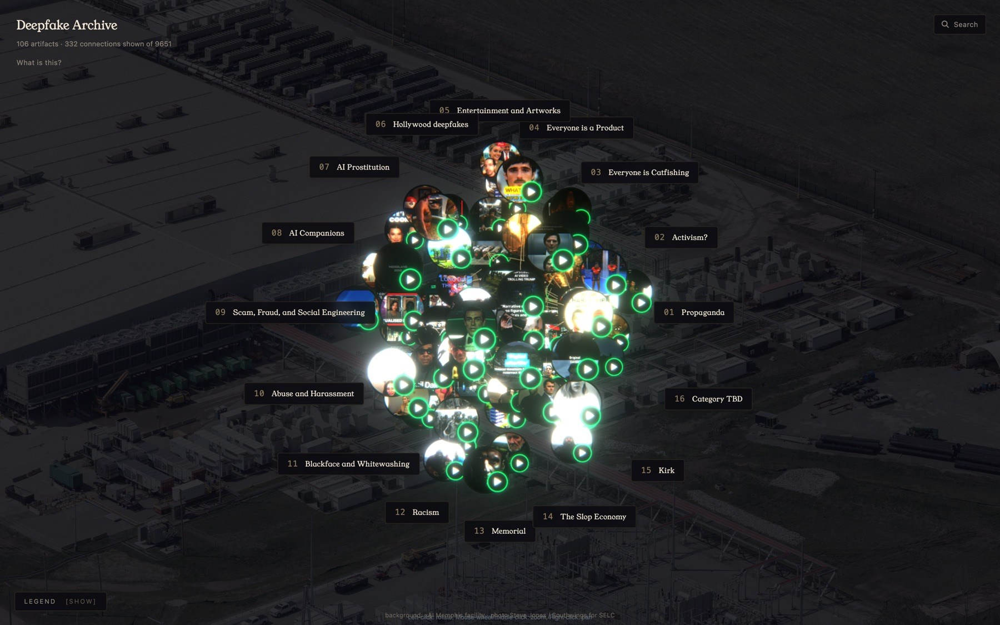
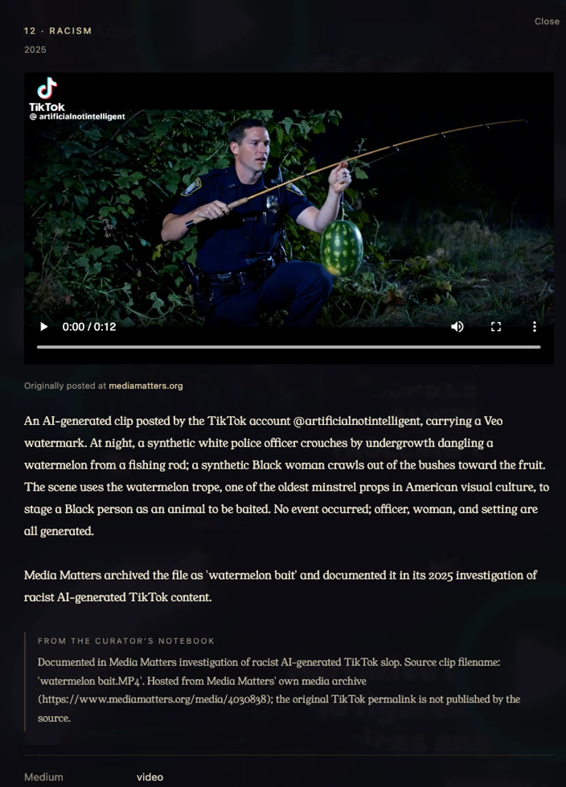
An online, interactive archive of synthetic media artifacts, organised as a network graph. The editorial spine is intent at creation, not technique. Sixteen rooms run from propaganda, activism and catfishing through Hollywood deepfakes, AI companions and AI prostitution to scam and fraud, abuse and harassment, blackface and whitewashing, racism, memorial and the slop economy.
Each artifact carries a curatorial panel that names the toolchain, the consent status and the concrete consequence to the people involved, in a register that is allergic to both AI-hype credulity and moral-panic credulity. The room that handles image-based abuse exhibits no media at all; its panels link to journalism and court documents instead.
Video essay · live installation with real-time face replacement
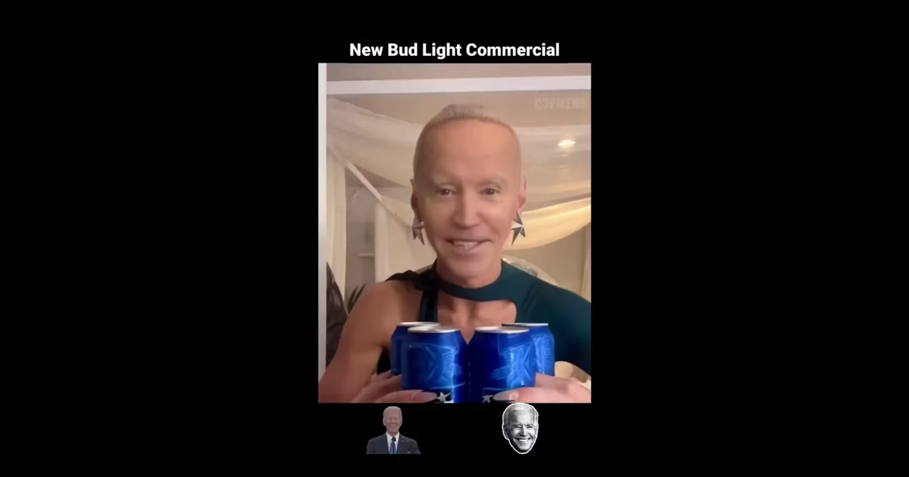
DEEPFAKE examines the cultural and emotional impact of synthetic media. From AI-powered memorials to non-consensual pornography, it unpacks a digital frontier where likenesses are stolen, realities are rewritten and consent is often an afterthought. The essay confronts a future already in motion, one in which our bodies are no longer private, but programmable.
The work is presented alongside a live installation running real-time deepfake technology, inviting viewers to witness their own digital identity manipulated in front of them. What reads as an argument on screen becomes a physical experience in the room: the audience is handed the same tool the essay is describing, and has to decide what to do with it.
Interactive installation · drones, computer vision, real-time user interaction
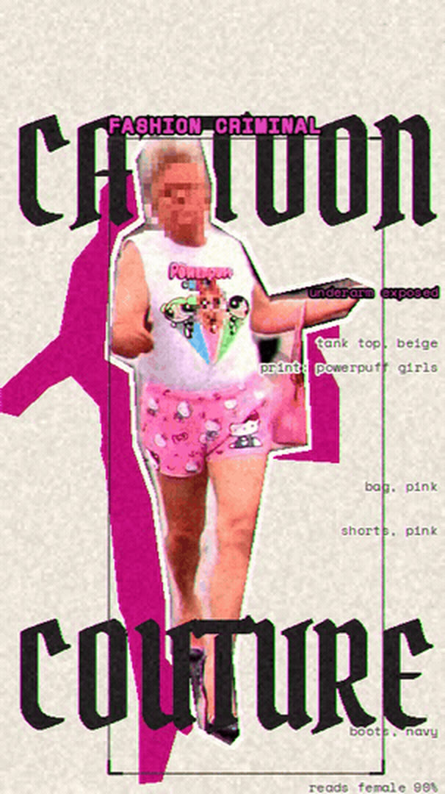
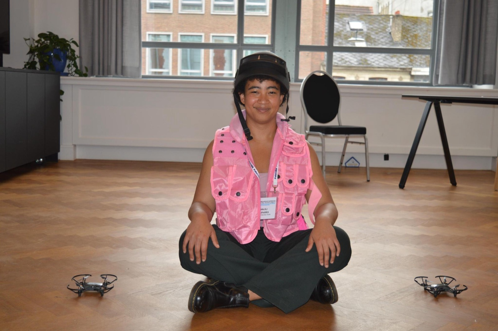
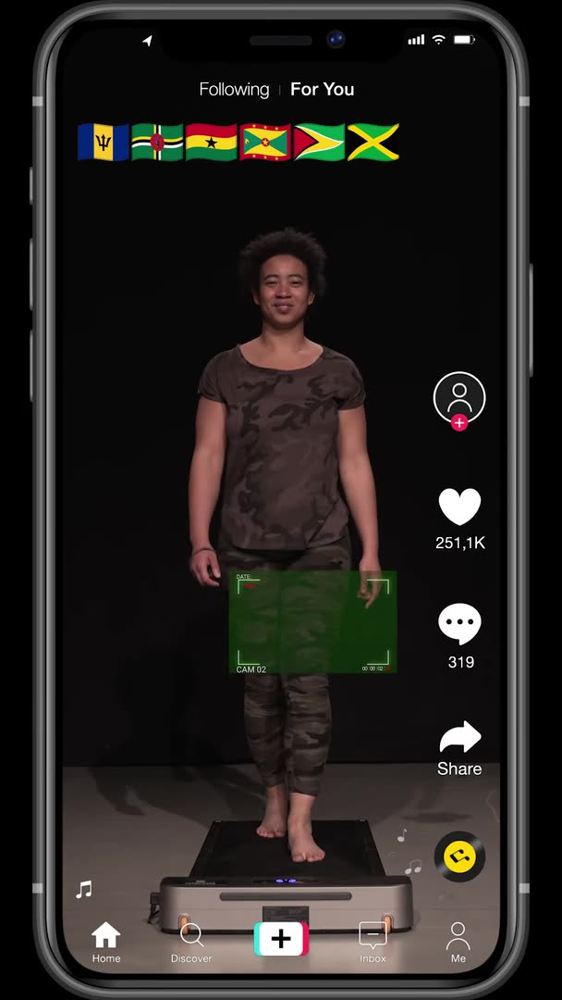
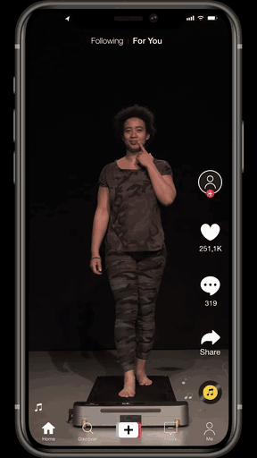
Left: a verdict panel from the drone feed. Right: the drones patrolling for corporate fashion crimes.
Fashion Police Drones transforms drones into arbiters of fashion, inviting the audience to set the criteria for fashion norms through an interactive platform. A primary drone publicly judges outfits while stalker drones quietly scan for style infractions, and participants experience surveillance and societal judgement from inside the system that produces them.
The infractions fall into three categories: corporate fashion crimes, targeting fast-fashion giants such as Zara and H&M for their environmental and labour abuses; the artist's own pet peeves, enforced with unapologetic flair; and country-specific crimes, where the drones emulate government-enforced dress codes and spotlight fashion as an instrument of political control. The whimsy of fashion norms is held against the real machinery of discrimination and privacy.
Interactive web installation · browser-based audio, voice masking
Participants record a few sentences; the browser returns a babble tape in their own voice.
BabbleOn is an interactive web installation that lets users craft their own babble tapes: digital audio designed to thwart audio surveillance. Blending indistinct human speech, the tapes mask conversations by mimicking their acoustic qualities, so that a recording device captures a room that sounds full of talk but yields no usable speech.
Against increasingly capable multi-speaker identification systems, the work offers a personal countermeasure. Participants record one or two sentences, which are chopped, layered and remixed into a customised babble tape infused with the distinct properties of their own voice, like a restaurant where everyone sounds like you. The tape can be downloaded and kept. All processing happens in the browser; nothing is uploaded or stored.
Interactive website · AI, deepfakes, synthetic media, statistics · generated avatars, synthetic voice
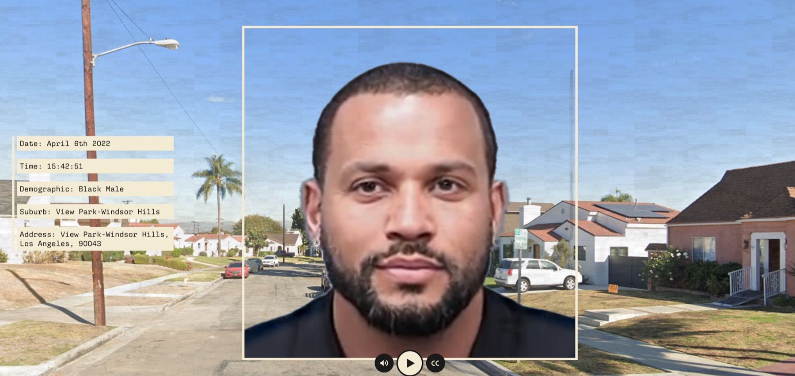
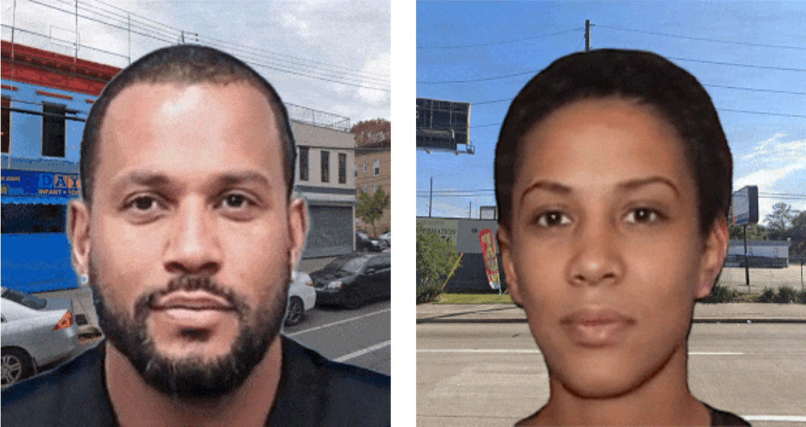
Composite victims, generated from US fatal-police-encounter data and placed where the forecast puts them.
Future Wake is an interactive website that scrutinises the present state of predictive policing, with a specific focus on forecasting police brutality. Awarded the Mozilla 2021 Creative Media Award, the project uses artificial intelligence to examine data on fatal police encounters in the United States in order to foresee future incidents, generating computer-simulated avatars that represent composite victims and narrating each of their stories.
By presenting potential future victims to its audience rather than potential future offenders, and by working through visual and affective means rather than expert knowledge and statistics, Future Wake provokes critical thought about the efficacy and ethics of predictive policing. It challenges viewers to consider what societal safety actually means, how it is defined, and who is marginalised or overlooked within these systems.
Documentary · ten years of synthetic biology, from engineered bacteria to spider silk
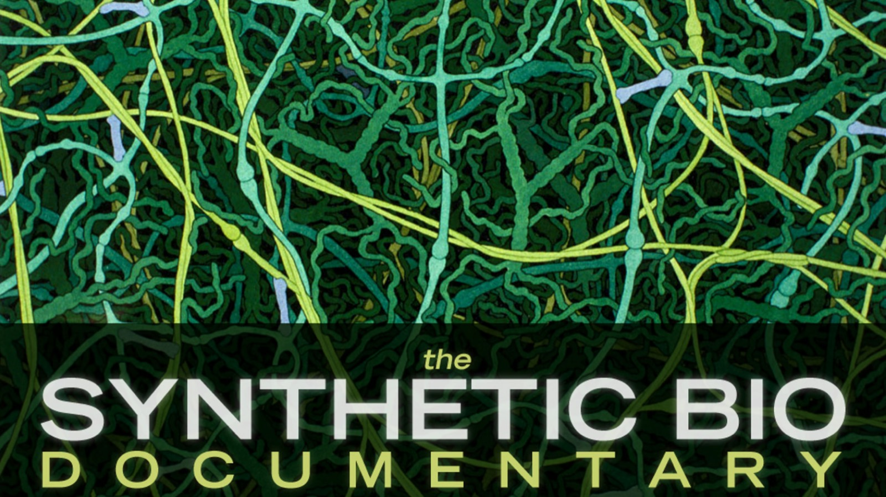
Trailer at vimeo.com/22153761
This documentary explores the emerging field of synthetic biology, where DNA is treated as programmable code and cells as genetic circuits. It covers ten years of advances, from engineering E. coli to smell like fresh rain to goats producing spider silk in their milk, and asks what happens to a discipline once its material becomes something to be written rather than only read.
The film sets those advances against the ethical questions they raise: how life is defined, where the boundaries of genetic engineering should sit, and who gets to draw them. It is the earliest work in this portfolio and the first statement of a question the later works keep asking in other materials, about bodies rendered as data and rewritten by the systems that read them.